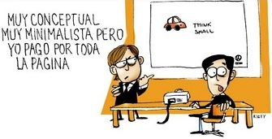
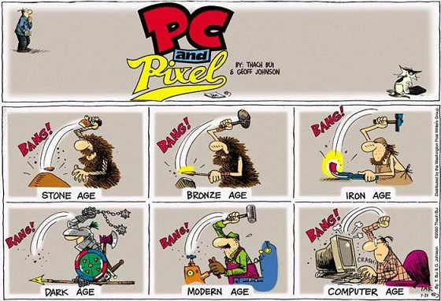

Web Minimalista...

El minimalismo es una corriente artística que se basa en la reducción de objetos reales a formas simplificadas, geométricas y hasta cierto punto frías. El minimalismo está presente en muchos campos como la escultura, la pintura, el diseño e inclusive la música. Podríamos escribir muchísimo de este tema, pero solo abordaremos lo que nos interesa en este momento, el diseño web minimalista.
Esta tendencia de diseño es muy popular entre muchos diseñadores, inclusive se cree que un diseño web minimalista es la representación perfecta de un diseño profesional, lo cual no es necesariamente cierto. Pues no es un estilo que sea adecuado para usarlo siempre, sin embargo si su uso es acertado esto puede suponer un importante salto de calidad de nuestra web y pese a la reducción de elementos frente a un diseño estándar, el hacer un website minimalista de alta calidad puede llegar a ser una tarea más difícil de lo esperado.
Casamiento
La adicción a la computadora al extremo, provoca que los chicos: se aislen de los amigos, no quiran salir de casa, se acuesten muy tarde, se enfrenten a los padres, y si se les suspende el servicio de internet se tornan agresivos y se ausentan de casa sin permiso para ir a algún cyber.
Chequeas reiteradamente tu e-mail. Juegas online por 12 horas o más al día. Le das más prioridad a tus amigos de la sala de chat que a tus amigos reales. Descuidas a tu familia, el trabajo e incluso tu salud e higiene personal. Estos son los síntomas de una nueva adicción que ha surgido en años recientes: la adicción a la computadora.
Edad Ordenador

Aunque tal y como hoy conocemos la informática se puede considerar una ciencia relativamente moderna, esto no es así. Tenemos que tener muy claro que los computadores no han nacido en los últimos años, sino que sus orígenes se remontan a tiempos pretéritos.
El ser humano siempre ha necesitado encontrar métodos rápidos y efectivos para resolver sus cálculos, y con ayuda de su gran inventiva ha conseguido a través de los siglos desarrollar las computadoras. Hoy en día ya estamos acostumbrados a vivir con ellas, o casi, y no nos percatamos de que su aparición ha tenido una gran influencia en diversos aspectos de nuestra vida diaria, mejorándola y abriendo puertas que antes eran desconocidas para la humanidad.